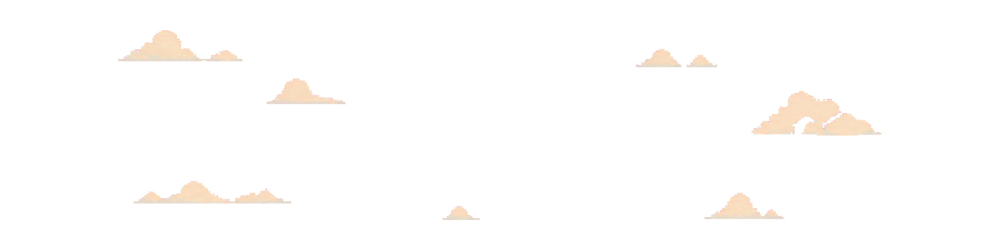

1440 × 900 · 五组场景位置原型
场景组内部包含石材、草坪、台阶与植物；组间允许暖白留白。仅云层、人物和瀑布保持独立动态。

01 左侧遗迹与草地组330×285 · bottom left · z-index 4
02 中央人物平台与草地组660×265 · bottom center · z-index 5
03 右侧电脑台、水池与瀑布出口组290×290 · bottom center · z-index 6
04 最右侧台阶建筑组180×350 · right 30px clipped · z-index 5
05 路牌小组130×150
bottom center · z-index 7